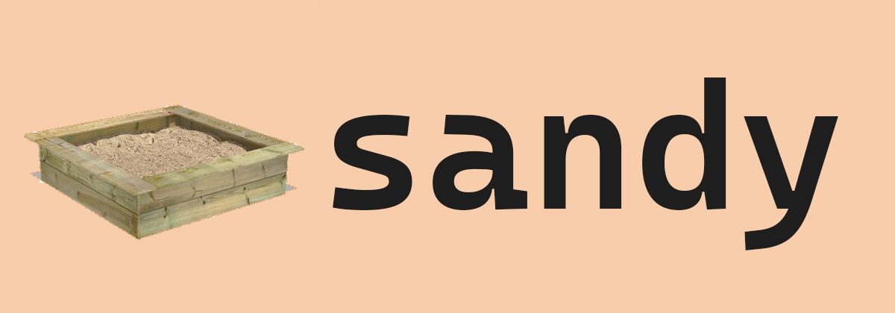

A lightweight Windows sandbox runner. Run any executable in an isolated, kernel-enforced sandbox with fine-grained file, folder, and network access control — no VMs, no Docker, no elevation required.
# Risky operation: cleaning a test folder — one wrong path
# and your entire project is gone. Sandy makes it safe:
sandy.exe -c cleanup.toml -x cmd.exe /c "del /s /q * && rd /s /q ."
# cleanup.toml — only 6 lines needed:
[sandbox]
token = 'appcontainer'
workdir = 'C:\project\test\output'
[allow]
all = ['C:\project\test\output'] # nothing else is reachable
[limit]
timeout = 30
# Everything else defaults to deny-all / disabled.
# Your project, profile, and system files are kernel-protected.
VMs take minutes to boot. Windows Sandbox needs Hyper-V. OS-level isolation is overkill
when you just need to run a quick script safely. Sandy is instant — a single native
sandy.exe, no runtime, no setup, no waiting.
In locked-down corporate environments, Hyper-V, Windows Sandbox, and even VMs may be disabled by policy — you only own the user domain with no elevation. Sandy runs entirely in user-space using unprivileged Windows APIs. No admin, no GPO exceptions needed.
Sandy doesn't simulate isolation — it leverages the same kernel-level security mechanisms that protect UWP apps and Microsoft Edge. Access decisions are made by the Windows kernel, not by Sandy.
Sandy is built for situations where you need to run code but can't fully trust what it might do to your system.
Commands like rm -rf *, recursive deletes, or batch file mutations are one typo
away from disaster. Sandy constrains the blast radius — the process can only touch paths you
explicitly allow.
AI agents that call tools, write files, and execute code need guardrails. Sandy gives each agent invocation its own sandbox with precise permissions — read the project, write to output, deny everything else.
Long-running autonomous agents produce unpredictable filesystem activity. Sandy provides durable sandboxing that survives agent crashes, restarts, and multi-hour execution — with full auditability via session logs.
Downloaded executables, third-party scripts, npm packages running post-install hooks — run them sandboxed first. Sandy blocks access to your profile, secrets, and system unless explicitly granted.
Analyze malware behavior, test exploit payloads, or audit application resource usage with Sandy's Procmon-backed audit logging. Trace mode generates a sandboxability report for any executable.
Run build steps, test suites, and deployment scripts with least-privilege filesystem access. Sandy's TOML configs are version-controllable and its exit codes follow POSIX conventions for clean integration.
Sandy reads your TOML configuration, creates an isolated security context, grants precisely the permissions you specify, launches your process, and restores everything on exit.
Uses the same kernel-level isolation as UWP apps and Microsoft Edge. Each instance gets
a unique AppContainer SID (S-1-15-2-*) derived from a UUID-based
profile name.
system_dirs controls access to Windows & Program Files
Creates a restricted token with a unique per-instance SID
(S-1-9-*) under the Resource Manager authority. Supports configurable
integrity level — low or medium.
DENY_ACCESS ACEs — kernel evaluates deny-before-allow[registry] section)
Use AppContainer when you need network isolation and don't require named pipes or COM.
Use Restricted Token when the sandboxed app needs named pipes, COM/RPC, or medium integrity
for broader compatibility.
Every Sandy instance generates a UUID at startup and derives a unique SID for all ACL operations. This is the foundation of multi-instance safety:
| Aspect | AppContainer | Restricted Token |
|---|---|---|
| Instance SID | S-1-15-2-* (from profile name) |
S-1-9-* (from GUID) |
| Grant scope | Per-instance — isolated ACEs | Per-instance — isolated ACEs |
| Cleanup scope | Own ACEs only — zero interference | Own ACEs only — zero interference |
| Registry tracking | HKCU\Software\Sandy\Grants\<UUID> |
|
Sandy manages Windows DACLs at the ACE level — adding individual Access Control Entries on grant, removing them on cleanup. This is fundamentally different from snapshot-based DACL restoration, which races fatally with concurrent instances.
| Level | Config Key | What It Grants | Key Restriction |
|---|---|---|---|
| Peek | peek | List + stat a single directory | Non-recursive — directory only |
| Read | read | Read files, list directories | No FILE_EXECUTE — can't load DLLs |
| Write | write | Create and modify files | No read — write-blind |
| Execute | execute | Read + execute | Standard (RX) — for running programs |
| Append | append | Append data to files | No overwrite, no read |
| Delete | delete | Delete files and directories | No read, no write |
| All | all | Full data control | No WRITE_DAC, WRITE_OWNER, FILE_DELETE_CHILD |
write does not grant read, and read does
not grant execute. Grant each explicitly, or use all.
Directories with executables (Python, Node) need execute, not read.
Uses real DENY_ACCESS ACEs. The Windows kernel evaluates DENY before ALLOW
as expected — straightforward and reliable.
The kernel ignores DENY ACEs for AppContainer SIDs. Sandy implements deny
via allow-mask reduction — reading the existing ALLOW ACE, subtracting the
denied bits (preserving shared bits like SYNCHRONIZE), and writing back a reduced
mask with PROTECTED_DACL to break inheritance.
Sandy supports carving out allowed subtrees from within denied areas. All allow and deny entries are merged into a single pipeline, sorted by path depth. The most specific (deepest) path always wins:
# Config: deny all of C:\repos, but allow C:\repos\snipps
[deny]
all = ['C:\repos']
[allow]
all = ['C:\repos\snipps']
peek = ['C:\repos'] # list the repos dir itself
# Pipeline execution log:
PIPELINE: sorted 3 entries by path depth:
DENY [ALL ] C:\repos
ALLOW [PEEK ] C:\repos <- strip deny (dir only)
ALLOW [ALL ] C:\repos\snipps <- strip deny (subtree)Sandy never leaves your system in a dirty state. Every exit path — clean, crash, signal, power loss — has a guaranteed cleanup mechanism.
| Scenario | ACLs | Loopback | Container | Task | WER | Registry | Mechanism |
|---|---|---|---|---|---|---|---|
| Clean exit | ✅ | ✅ | ✅ | ✅ | ✅ | ✅ | RAII guard |
| Child crash | ✅ | ✅ | ✅ | ✅ | ✅ | ✅ | Child exit ≠ Sandy exit |
| Ctrl+C / close | ✅ | ✅ | ✅ | ✅ | ✅ | ✅ | Console signal handler |
| Sandy crash (SEH) | ✅ | ✅ | ✅ | ✅ | ✅ | ✅ | __except handler |
| Power loss / taskkill | ✅ | ✅ | ✅ | ✅ | ✅ | ✅ | Scheduled task at logon |
Before modifying any ACL, Sandy persists each grant as
TYPE|PATH|SID to HKCU\Software\Sandy\Grants\<UUID>.
The registry write happens before the filesystem modification — if Sandy crashes
mid-grant, the record survives for later cleanup.
A SandyCleanup_<UUID> task is registered in Task Scheduler,
configured to run sandy.exe --cleanup at next logon. It only fires
if Sandy didn't clean up normally. Deleted on clean exit.
--cleanup checks each persisted PID with OpenProcess +
WaitForSingleObject to handle zombie processes (terminated but handle still open).
Only entries from truly dead processes are cleaned.
Cleanup walks each stale grant, removes only the ACEs matching the dead instance's SID
via RemoveSidFromDacl, and deletes the registry subkey. Live instances'
grants are never touched.
ACL grants · Registry persistence · Loopback exemptions · AppContainer profiles · Scheduled tasks · WER exception keys — all automatically restored regardless of exit path.
Sandy's security model is additive and explicit — the sandbox starts with zero access, and every permission is granted individually. Several design decisions enforce defense-in-depth.
Every TOML key for the active mode must be explicitly declared. There are no hidden defaults — if a key is missing, Sandy exits with a configuration error. This eliminates "I forgot to disable network" surprises.
Even with all access, three bits are permanently excluded:
WRITE_DAC (can't modify ACLs), WRITE_OWNER (can't take ownership),
FILE_DELETE_CHILD (can't bypass child deny).
If a configured resource limit (memory, process count) cannot be enforced via the job object, Sandy terminates the child immediately with exit code 129. The sandbox never runs with unenforced limits.
--dry-run validates the entire config and shows all planned changes
(ACL modifications, capabilities, environment) without touching the system. Run it first
to catch mistakes.
Session logs capture every ACL operation, deny rule application, and error with Win32 error codes.
Audit mode (-a) uses Procmon to record all denied resource accesses with deduplication.
Concurrent Sandy instances have completely independent SIDs, ACE sets, and registry subkeys. One instance's cleanup never touches another's grants — verified by dedicated concurrent test suites.
The Windows kernel does not evaluate DENY_ACCESS ACEs for AppContainer SIDs.
This is an immutable property of the OS. Sandy handles this by implementing deny as allow-mask reduction
in AC mode, and real DENY ACEs in RT mode — the correct approach for each kernel behavior.